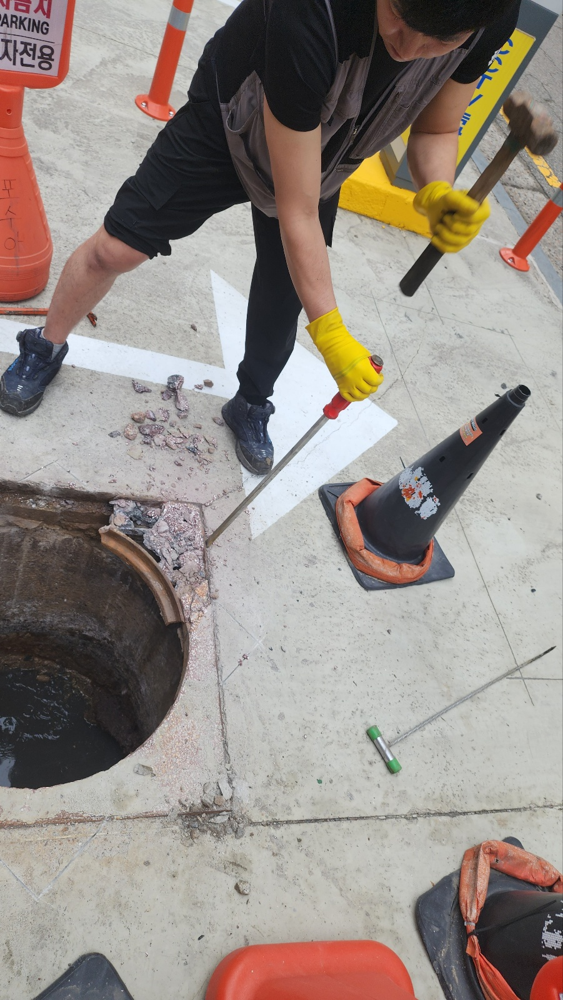
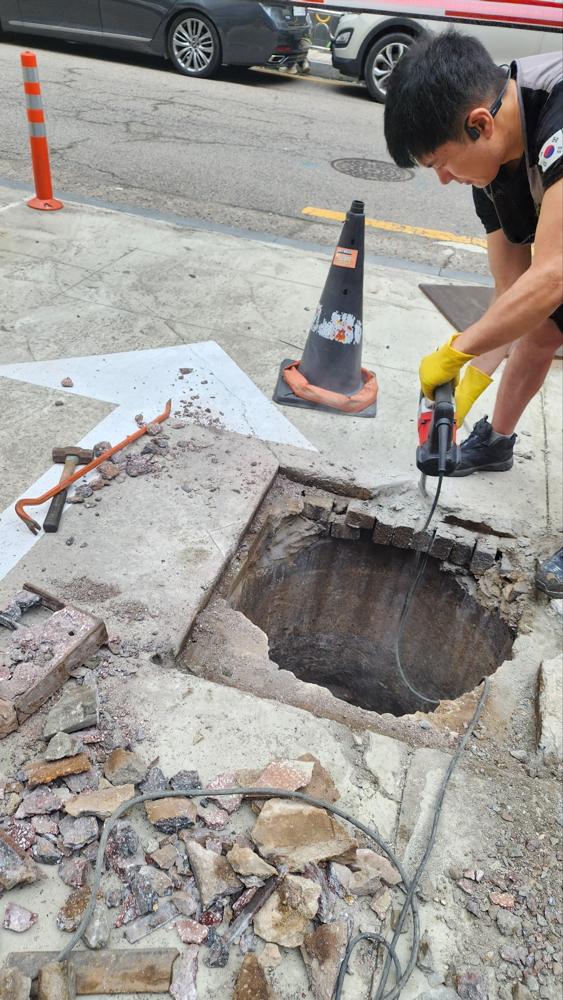
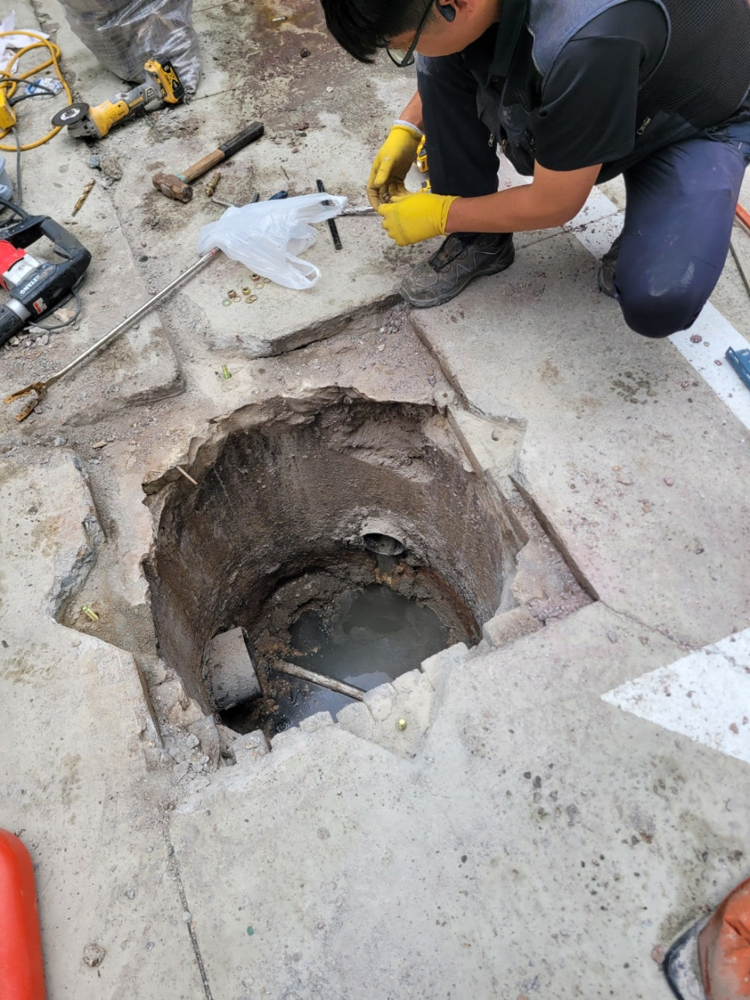
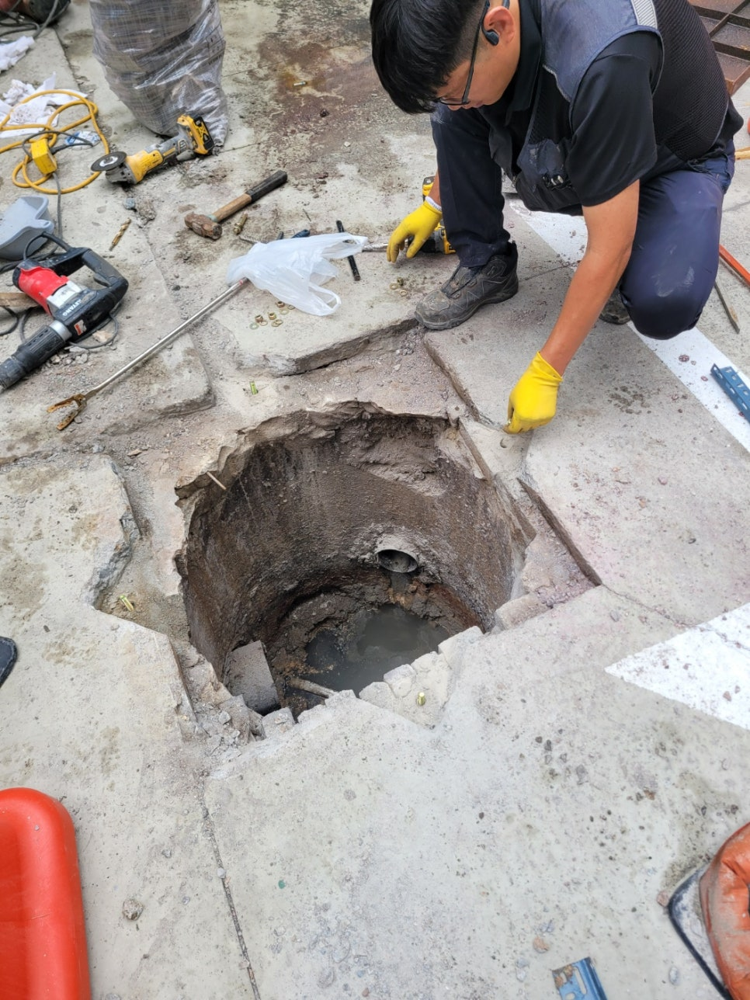
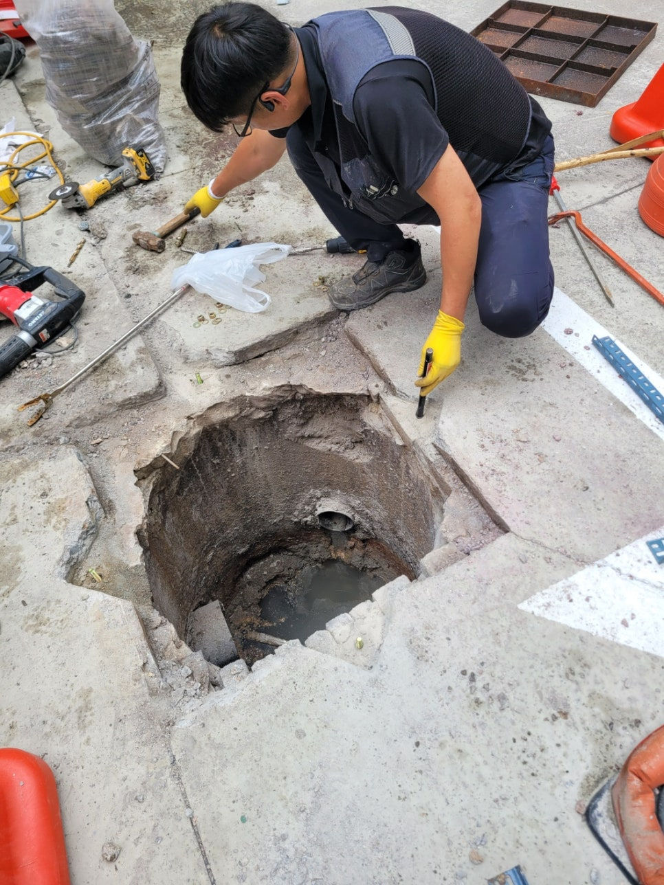
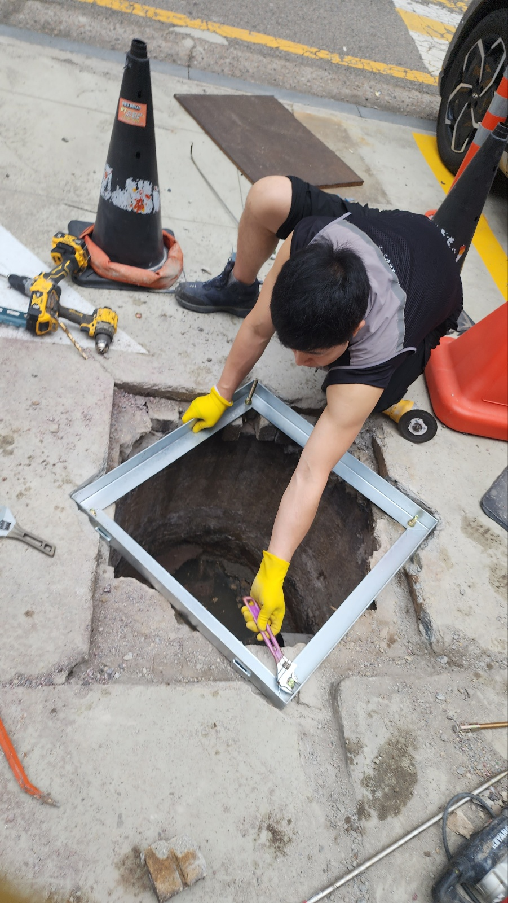

🏠 용인시 처인구 맨홀공사 깨진곳 보수작업 하는곳 업체
용인 처인구 하수구막힘 전문 시공 후기

📋 작업 개요
- 위치: 용인 처인구, 처인구, 용인
- 서비스 유형: 하수구막힘, 배관막힘, 맨홀막힘, 역류해결, 배관청소, 설비공사, 배관보수
- 작업 일시: 2025. 6. 28. 17:33
- 업체명: 하수구수사대 (010-5615-2118)
🔍 문제 상황
안녕하세요.
설비 전문업체 "하수구수사대" 입니다.
용인시 처인구 맨홀공사 현장 – 깨진 맨홀 보수작업 진행한 후기
용인시 처인구 맨홀공사 깨진곳 보수작업 하는곳 업체
최근 용인시 처인구의 한 도로에서 맨홀 주변이 깨져 차량이 지나갈 때마다 심한 충격과 소음이 발생한다는 민원이 접수되었습니다. 실제 현장을 방문해보니 맨홀 테두리가 파손되어 있었고, 콘크리트 틈 사이로 균열이 생겨 비가 올 때마다 오수가 새어나오는 문제도 발견되었습니다. 이러한 상태를 방치하게 되면 차량 손상뿐만 아니라 보행자 안전에도 위협이 되기 때문에 빠른 시일 내에 보수작업을 진행해야 했습니다.

🔎 원인 분석
💡 전문가 진단: 정밀 진단 장비를 사용하여 슬러지의 고착 여부를 판명하고 타격/세척 작업을 실시했습니다.
1. 현장 점검 – 정확한 손상 위치 및 원인 파악
작업 전 가장 중요한 것은 현장 점검과 진단입니다. 파손된 맨홀을 단순히 메우는 것만으로는 근본적인 문제 해결이 어렵기 때문에, 주변 지반의 침하 여부, 맨홀 뚜껑과 테두리의 균열 범위, 배관 상태 등을 모두 확인했습니다. 용인시 처인구는 도심과 외곽이 공존하는 지역이다 보니, 오래된 하수관로나 배관이 많아 노후화로 인한 파손 가능성도 염두에 두어야 했습니다.
현장 확인 결과, 해당 맨홀은 중장비 차량이 자주 오가는 도로에 위치해 있어 충격 하중이 반복적으로 작용하며 맨홀 주변 콘크리트가 부서진 것으로 분석되었습니다. 또한 비가 많이 올 경우 맨홀 내부로 흙탕물이 유입되며 주변 지반이 침하되어 균열이 더욱 심화되는 상황이었습니다.
2. 맨홀공사 및 깨진 부분 보수작업 진행
본격적인 작업은 새벽 시간대에 맞춰 진행했습니다. 차량 통행이 적은 시간대를 선택하여 안전한 작업 환경을 확보한 것이죠. 먼저 맨홀 주변을 절단기와 컷팅 장비를 이용해 정리한 후, 파손된 콘크리트 구조물을 모두 철거했습니다. 이후 내부를 청소하고, 침하된 지반은 자갈과 몰탈을 이용해 보강했습니다.
다음으로는 새로운 맨홀 테두리 구조물을 설치하고, 고강도 콘크리트를 타설해 맨홀 주변을 정비했습니다. 특히 차량 하중이 집중되는 구간이기 때문에 일반 콘크리트가 아닌 포장용 특수 콘크리트를 사용해 내구성을 높였습니다. 마감 작업까지 모두 마친 후에는 표면을 매끄럽게 다듬어 차량 주행 시 흔들림이나 소음이 없도록 했습니다.

🔧 작업 과정
3. 작업 후 점검 및 관리
보수작업이 완료된 후, 충분한 양생 시간을 확보한 뒤 맨홀 주변을 다시 점검했습니다. 차량을 실제로 통과시키며 소음, 진동, 흔들림 여부를 테스트했고, 모두 안정적으로 유지되고 있는 것을 확인했습니다. 작업 전에는 맨홀 위를 지날 때마다 “덜컹” 소리가 났지만, 보수 후에는 그런 소리가 전혀 나지 않았습니다.
현장 관리자가 가장 만족했던 점은 차량 통행과 주민 불편이 최소화되었다는 점이었습니다. 공사 진행 중에도 철저한 통제와 안내를 통해 민원 없이 작업을 마무리할 수 있었습니다.
4. 용인시 처인구 맨홀 보수, 믿을 수 있는 전문업체 선택이 중요
맨홀공사나 도로 보수는 단순한 작업처럼 보일 수 있지만, 실제로는 전문성과 경험이 매우 중요한 작업입니다. 특히 지반 침하나 하수 역류, 주변 배관 상태까지 함께 고려해야 하기 때문에 일반 인력이 아닌 전문 업체의 개입이 필수적입니다.
이번 작업을 통해 느낀 점은, 용인시 처인구처럼 차량 통행이 잦고 다양한 지형이 섞인 지역일수록 정기적인 맨홀 점검과 신속한 보수작업이 필요하다는 것입니다. 작은 깨짐이나 틈새도 방치하게 되면 큰 사고로 이어질 수 있으므로, 이상 징후가 보이면 빠르게 점검을 받아야 합니다.
용인시 처인구 맨홀공사 깨진곳 보수작업 업체를 찾고 계신다면, 정확한 진단과 안전 시공이 가능한 전문 업체를 선택하세요.
저희는 오랜 경험과 다양한 장비를 보유하고 있어, 어떤 맨홀 문제든 빠르고 깔끔하게 해결해 드립니다.
무료 상담 및 현장 점검도 가능하니, 부담 없이 문의주세요.


✅ 작업 완료
하수구수사대 010 4437 9128
경기도 용인시 처인구 중부대로1313번길 20-25 2층 202호 나21
#용인맨홀공사 #처인구맨홀공사 #용인시맨홀보수공사 #처인구맨홀보수 #용인맨홀업체 #용인맨홀수리




⚠️ 하수구 배관 막힘 예방 및 관리 가이드
- ✅ 머리카락, 비닐, 물티슈 등 물에 분해되지 않는 이물질은 하수구 유입을 절대 금지해 주세요.
- ✅ 하수구 거름망을 씌우고 모여진 이물질은 주기적으로 쓰레기통에 바로 비워주셔야 합니다.
- ✅ 배관 노후가 심할 경우 이물질이 더 쉽게 걸리므로 주기적인 배관 세척(고압세척 등)을 권장합니다.
- ✅ 작업 후 1년 이내 재발 시 하수구수사대에서 무상 A/S 보증 서비스를 제공합니다.
💡 핵심 정리
- 확실한 장비 작업(내시경 점검 및 샤프트 스케일링)으로 원인을 뿌리 뽑습니다.
- 작업 후 1년 이내에 동일한 부위 재발 시 100% 무상 A/S 서비스를 보장합니다.
- 서울 · 경기 · 인천 전 지역에 24시간 언제든 긴급 출동할 수 있도록 항시 대기 중입니다.
❓ 자주 묻는 질문 (FAQ)
🚨 용인 처인구 하수구막힘 문제로 고민이신가요?
정확한 원인 진단과 확실한 시공으로 재발 없는 해결을 약속드립니다.
24시간 긴급 출동 | 서울 · 경기 · 인천 전지역 | 1년 내 재발 시 무상 A/S